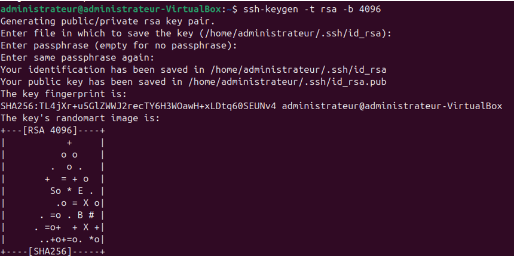
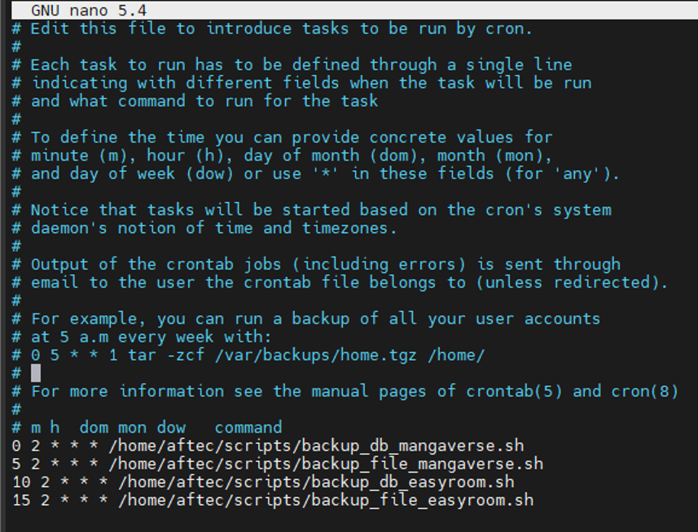
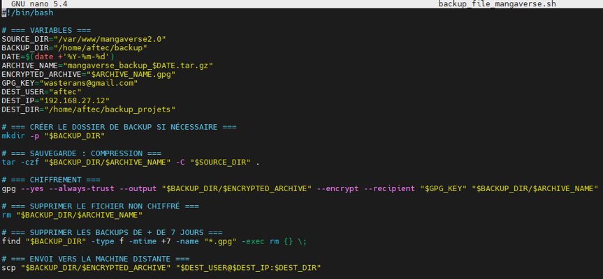

Informations
- Solution : Sauvegarde automatisée chiffrée
- Outils : GPG, SSH, cron
- Date : Mai 2025
Objectif
Ce projet met en place un système automatisé de sauvegarde de fichiers web et de bases de données MySQL, chiffrés via GPG, transférés en SSH vers une machine distante, et exécutés automatiquement via crontab.
Points clés de la configuration
- SSH : configuration sans mot de passe avec
ssh-keygenetssh-copy-id - GPG : génération de clé publique/privée pour chiffrement
- Scripts : automatisation via
backup_db.shetbackup_file.sh - Crontab : exécution planifiée à 2h00 et 2h05
Structure des scripts
Les scripts utilisent mysqldump et tar pour exporter les données, les chiffrent avec GPG, puis les envoient via scp.
Exemple de tâches cron
0 2 * * * /home/osboxes/Documents/backup_db.sh
5 2 * * * /home/osboxes/Documents/backup_file.sh